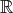
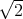

Algorithm Complexity and NP-Completeness
John Mitchell
Size of an instance: the number of binary characters required to store the problem.
For example, if x is a positive integer we let n = ⌊log 2(x)⌋. Then
So we need O(log(x)) bits to store x. We don’t need to specify the base for the logarithm here, because
The major classification of algorithm efficiency is insensitive to the choice of data representation, for the most part. There are two restrictions:
Computation time
The time required for an elementary operation (addition, subtraction, multiplication, division, comparison) is counted as unit time. (Need to be a little careful if multiply very large numbers together.)
Instances
Perfect matching, linear programming, and node packing are all examples of optimization problems. An optimization problem X consists of an infinite number of instances d1,d2,… where the data for instance di is given by a binary string of length l(di).
Worst case running time
Let A be an algorithm the solves every instance of X in finite time. Let gA(di) be the running time of A on instance di. Measure performance of A on X using the worst-case running time, for each problem size k:
Advantages of using worst-case performance measure:
Definition 1 Let f and g be functions from the set of integers or the set of reals to the set of real numbers. The function f(k) is O(g(k)) whenever there exist positive constants C and k′ such that
Feasibility problems
For example, an instance of the perfect matching feasibility problem consists of a graph G = (V,E) and asks the question “Does there exist a perfect matching on this graph”? The answer is either Yes or No.
Definition 2 A feasibility problem X consists of a set of instances D and a set of feasible instances F ⊆ D. Given an instance d D, determine whether d F. The answer is either Yes or No.
Binary search:
Many instances of optimization problems can be solved using binary search on a sequence of instances of
feasibility problems. For example, the 0 - 1 linear optimization problem
can be solved using binary search applied to the 0 - 1 linear feasibility problem
The initial bounds on z can be taken to be
Definition 3 Algorithm A is a polynomial time algorithm for the feasibility problem X if fA(k) is
O(kp) for some fixed p.
denotes the class of feasibility problems that can be solved in polynomial time.
Problem X if and only if there is a polynomial time algorithm for X.
Examples of problems in :
Definition 4 The function f(k) is exponential if there exist positive constants c1,c2 > 0, constants d1,d2 > 1, and a positive constant k′ such that
For example, let b be the largest integer for an instance of an optimization problem X, so this requires storage O(log 2(b)). Assume the total storage is also O(log 2(b)). If algorithm A runs in time O(b) then it requires exponential time for this instance, since
Certificate of Feasibility
Given an instance d D of a feasibility problem X, a certificate of feasibility Qd is information that can be used
to check feasibility in polynomial time. Note that the length of Qd must be polynomial in the length of the
data.
For example, a certificate of feasibility for an instance of the perfect matching problem would be a list of edges in the matching.
Definition 5 A feasibility problem X = (D,F) is in P if there exists a certificate of feasibility for any d F that can be checked in polynomial time.
Note that ⊆ NP, since the algorithm for solving the problem can used as a certificate.
Is = NP? This is the fundamental question in computational complexity. It is generally accepted that ≠NP, but not yet proven. This is one of the Clay Millennium Problems, http://www.claymath.org/millenium-problems/p-vs-np-problem
Why study problems in P?
Papadimitriou and Steiglitz, page 351: “The recognition versions of all reasonable combinatorial optimization
problems are in P, …(because) …combinatorial optimization problems aim for the optimal design of objects. It is
reasonable to expect that, once found, the optimal solution can be written down concisely, and thus serve as a
certificate for the recognition version.”
A problem not in P:
Solution of quadratic inequalities: Given symmetric n×n matrices Q1,…,Qm, and scalars b1,…,bm, does there exist
x n satisfying xT Q
ix ≤ bi for i = 1,…,m?
Eg, the only solutions to x2 ≤ 2, -x2 ≤-2 are x = ±, neither of which can be written down in polynomial
time.
If ask for a rational x then the problem is in P.
The hardest problems in P are the P-complete problems. We will set up some definitions leading towards the characterization that
If an P-complete problem can be solved in polynomial time then any problem in P can be solved in polynomial time.
Definition 6 Let X1 = (D1,F1) and X2 = (D2,F2) be two feasibility problems in P. Assume there exists a function g : D1 → D2 such that d1 F1 if and only if g(d1) F2, for any instance d1 D1. If g is computable in time that is polynomial in the length of the encoding of d1 then X1 is polynomially transformable to X2.
Proposition 1 If X1 is polynomially transformable to X2 and if X2 then X1 .
A polynomial transformation is a “one-shot” modification of the original problem. We can also think of using problem X2 as a “subroutine”, so we solve multiple instances of problem X2 in order to solve an instance of X1.
Definition 7 Let X1 = (D1,F1) and X2 = (D2,F2) be two feasibility problems in P. The problem X1 is polynomially reducible to X2 if there exists an algorithm A1 for X1 that uses an algorithm A2 for X2 as a subroutine, and A1 runs in polynomial time under the assumption that each call of the subroutine takes unit time.
Proposition 2 If X1 is polynomially reducible to X2 and if X2 then X1 .
Definition 8 A feasibility problem X P is P-complete if all other problems in P polynomially reduce to X.
Proving a feasibility problem X is P-complete:
Why this direction? We know every problem in P can be polynomially reduced to our known P-complete problem, which in turn can be polynomially reduced to X. Hence, every problem in P can be polynomially reduced to X.
The first problem to be shown to be P-complete was SAT, by S. Cook in 1971.
Definition 9 A Boolean variable y is a variable that can assume only the values true or false. Boolean variables can be combined to form Boolean formulas using “negation” , “or” y1+y2, “and” y1.y2. A clause is a formula containing some of the original variables together with only or and negation. An instance of the Satisfiability problem (SAT) consists of a collection of clauses C1,…,Cm and asks if there is a truth assignment to the Boolean variables so that all the clauses can be satisfied simultaneously.
For example:
The problem 3-SAT is also P-complete. In this problem, each clause has at most 3 literals.
A “gadget” is a structure that is constructed when reducing one problem to another. For example, in the reduction of 3-SAT to node packing, a clique is constructed from each clause. And in the reduction of 3-SAT to Hamiltonian cycle, a subgraph is constructed for each clause; the subgraph can be traversed in multiple different ways, corresponding to different ways to satisfy the clause; but it cannot be traversed in a way that corresponds to the clause being False.
In a reduction from 3-SAT, each clause is typically used to construct some structure, and then the structures are linked together somehow so as to enforce consistency between the truth assignments used for each different clause and its corresponding structure. These methods to enforce consistency can also be regarded as gadgets.